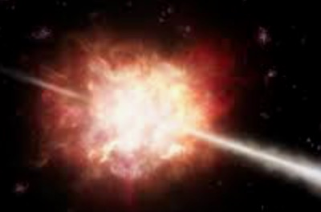

Spørg om astronomi og fysik
Her kan du stille mig et spørgsmål du har gået og tænkt over, eller bare tage et kig på nogle af de tidligere svar.
Siden er lidt under opbygning
Du kan godt stille spørgsmål, og du kan også godt kigge på de gamle svar, men indtil jeg får det fixet leder de til min gamle, ikke-mobil-venlige hjemmeside.
Om negativ masse
Til Ketil
Kosmologi
Universet
Mørkt stof
Alternative ideer
Om træt lys
Til Finn
Kosmologi
Rødforskydning
Lys
Alternative ideer
Om cykliske universer
Til JS
Kosmologi
Big Bang
Alternative ideer
Om stjernernes fordeling
Til Karin
Astronomi
Stjerner
Struktur
Om nordlys
Til Sofie
Fysik
Naturfænomener
Om himlens farve (og solnedgange og regnbuer)
Til Trille
Fysik
Naturfænomener

Om gammaglimts forudsigelighed
Til Kmn
Stjerner
Supernovaer
Om Universets vægt
Til Morten
Kosmologi
Universet
Om Universets alder og Hubbles konstant
Til Johan, Martin og Anders
Kosmologi
Universet
Om årsagen til tyngdekraften
Til Torben
Kosmologi
Ekspansion
Alternative ideer
Om stjerners rundhed
Til Rune
Stjerner
Om sorte hullers masse
Til Sarah
Sorte huller
Om negativ masse
Til Ole
Big Bang
Alternative ideer
Om Cepheider (pulserende stjerner)
Til Tania
Stjerner
Om begrebet metrik og rummets krumning omkring et sort hul
Til Sarah
Relativitetsteori
Sorte huller
Om mørk energi
Til Emil
Mørk energy
Alternative ideer
Om Universets udvidelse og vores plads i Rummet
Til Bent
Kosmologi
Ekspansion
Om Universets udvidelse med overlyshastighed
Til Nikolaj
Kosmologi
Ekspansion
Om lyden af en kop kaffe
Til Carsten
Kaffe
Fysik
Mere om den geometriske fortolkning af tyngdekraften
Til Torkild
Tyngdekraft
Relativitetsteori
Om den geometriske fortolkning af tyngdekraften
Til Torkild
Tyngdekraft
Relativitetsteori
Om rødforskydning
Til Peder
Rødforskydning
Fysik
Relativitetsteori
Om Sagittarius A*
Til Signe og Klaus
Sorte huller
Om Jorden uden Måne
Til Mikkel
Astronomi
Om den kosmiske mikrobølgebaggrundstrålings ensartethed
Til Torkild
Kosmologi
Om stoffets indgriben i Rummets struktur
Til Torkild
Tyngdekraft
Relativitetsteori
Om mørkt stof og mørk energi
Til Tobias
Mørkt stof
Mørk energi
Big Bang
Om Olbers' paradox
Til Torkild
Kosmologi

Om lysets hastighed i tyngdefelter
Til David
Lys
Tyngdekraft
Om overlyshastigheder og Universets udvidelse
Til M M
Kosmologi
Ekspansion
Universet
Om tidens retning
Til Og igen til Søren
Fysik
Mere om tid, om Universets udvidelse, samt lidt om generel relativitetsteori
Til Søren igen
Kosmologi
Ekspansion
Relativitetsteori
Om Universets tid
Til Søren
Kosmologi
Om LHC'ens dræberpotentiale
Til flere bekymrede venner og familiemedlemmer
Fysik
Sorte huller
Dommedag
Om meningen med det hele
Til Rasmus igen
Astronomi
Filosofi
Om Verdens begyndelse
Til Rasmus
Big Bang
Tyngdekraft
Stjerner
Ekspansion
Mørkt stof
Mørk energi
Liv
m.m.
Om Verdens ende
Til Lasse og David
Sorte huller